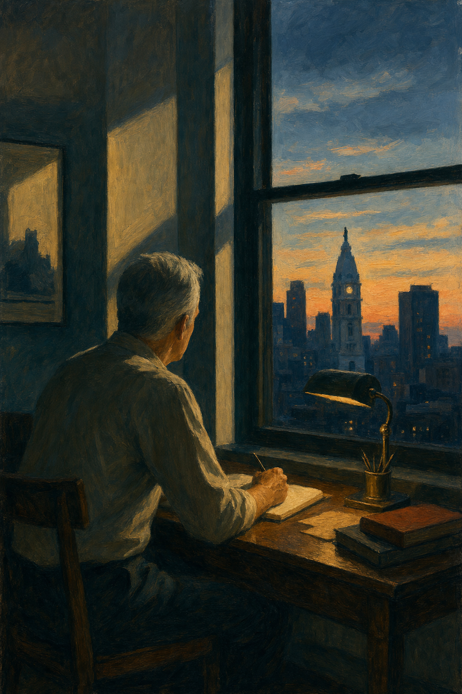

The essay behind the style — on Transcendentalist inheritance, resurrection and transfiguration, and the classroom as a form of communion, with a full critical apparatus of allusions and sources.
Read the essayJames Mulhern
Fiction · Poetry · Nonfiction
Author · Editor · Publisher
The work of James Mulhern has appeared in international literary journals and anthologies more than three hundred times. His novel Give Them Unquiet Dreams received a starred review from Kirkus Reviews and was named one of the Best Books of 2019.
Join the Reader's Circle
Get The Quiet Craft, a free, expanded notebook on fiction, poetry, and memoir craft — plus occasional word of new work.

A Note The Mulhern Teaches English site is under construction and not yet usable. Teaching resources are being prepared — for now, please visit the Store or email James.
300+
Journal Appearances
Oxford
Writing Fellow
2017
Pushcart Nominee
★
Kirkus Starred Review
A Welcome
For readers, writers, and students of the craft
James Mulhern is a Philadelphia-based novelist, poet, essayist, and professor emeritus of English whose novels, short stories, poetry, and nonfiction have appeared in international literary journals and anthologies more than three hundred times. His novel Give Them Unquiet Dreams received a Kirkus starred review and was named one of the Best Books of 2019.
He was awarded a fully paid Creative Writing Fellowship to the University of Oxford, nominated for a Pushcart Prize, shortlisted for the Aesthetica Creative Writing Award, longlisted for the Fish Short Story Prize, and named a Finalist for the Tuscany Prize in Catholic Fiction. His novels have earned favorable critiques from Kirkus Reviews, awards from Readers' Favorite Book Awards, and Red Ribbon recognition from the United Kingdom's Wishing Shelf Book Awards.
He is the founder of Silver Current Press, a Philadelphia imprint devoted to literary fiction, poetry, and the art of the well-made book. After three decades in the classroom, he now writes and publishes full time.
A Closer Look
Give Them Unquiet Dreams
The Kirkus-starred novel — named one of Kirkus Reviews' Best Books of 2019, a Readers' Favorite Book Award winner, and a Wishing Shelf Finalist.

Novel · 2019 · Kirkus Starred Review
A Family Haunted by Memory
Set in 1970s Irish Catholic Boston, Give Them Unquiet Dreams is a novel of haunted families, inherited silences, and the slow weather of memory. Across decades and shadowed rooms, the past refuses to stay buried.
"A luminous, beautifully told fairy tale grounded in history and elevated by spirit." — Kirkus Reviews (starred review)View on Amazon All Books

Poetry Collection · Now Available · Silver Current Press
Crossings
Twenty poems of family, inheritance, and threshold, built from a recurring vocabulary of touch, water, and the passage from darkness into light. Crossings: Selected Poems is available now in paperback, hardcover, Kindle, and audiobook.
View on Amazon Read the Complete Collection Analysis & Evaluation
For Reading Groups
Book Club Companions
Reading-group guides are now available for every Silver Current Press title — Crossings, Give Them Unquiet Dreams, Molly Bonamici, Assumptions and Other Stories, and A Prayer for Home — each with discussion questions grouped by voice, theme, and craft.
Criticism & Craft
Essays on the Work
Essays on recurring imagery, religious interpretation, and working belief across the fiction and poetry — the repeated motifs read as a single compositional system, fire, water, the sacred hidden in shabby detail, the Assumption of Mary, communion, the poetry of Crossings, the allusions inside Molly Bonamici, a working philosophy, a credo, writing as communion, teaching, style, and craft, and comparative studies alongside Joyce, O’Connor, Carver, Heaney, Dickinson, and Whitman.
From the Reviewers
Praise
A selection of critical reception from Kirkus Reviews, Readers' Favorite, The Missouri Review, the Wishing Shelf Book Awards, and readers.
"A luminous, beautifully told fairy tale grounded in history and elevated by spirit."
Kirkus Reviews — Starred Review
Give Them Unquiet Dreams
"The quieter scenes show the mind of a talented writer at work… Mulhern demonstrates considerable powers of description, particularly when portraying his saddest characters."
Kirkus Reviews
Assumptions and Other Stories
"A gleefully and wonderfully odd protagonist eases readers into a bare-bones plot."
Kirkus Reviews
Molly Bonamici
"Mulhern's writing displays all of the storytelling prowess of the contemporary Irish masters, yet manages to blend it in exquisitely with the use of modern day American settings."
Trudi Lopreto — Readers' Favorite
Assumptions and Other Stories
"Give Them Unquiet Dreams is brilliant; it's most highly recommended."
Jack Magnus — Readers' Favorite (Award Winner)
Give Them Unquiet Dreams
"Impressed the editorial staff with its well-written, complex characters, themes of the piece, and its fantastic voice."
The Missouri Review
A Prayer for Home
"A gripping, character-led story full of tiny twists and turns that will keep you turning the page… the author knows his characters well — they literally jump off the page."
The Wishing Shelf Book Awards (UK)
A Prayer for Home
"A powerful, emotionally rich novel that weaves together Irish folklore, family trauma, faith, and the supernatural with remarkable grace. Mulhern captures the heart of a Boston Irish Catholic family with authenticity and reverence."
Patrick Sullivan — Readers' Favorite
Give Them Unquiet Dreams
"I almost missed my subway stops because I was so engrossed in the story. I fell in love with the characters and grieved when the book ended, wanting it to go on and on."
Debra O. — Amazon ★★★★★
Give Them Unquiet Dreams
"What an amazing book — I didn't want it to end. The characters are quirky and unforgettable while the adventures are both zany and thought-provoking. Mulhern's good-humored treatment of Irish and Italian cultures disarms and charms while surprising the reader."
Kathleen Scherpa — Amazon ★★★★★
Assumptions and Other Stories
"Excellent. Very visual. Mulhern at his best."
The Galway Review (Editorial Note)
"Triggers" — Poem
"Mulhern's book gets to the heart of storytelling and those moments that render us speechless. The poignancy of the brothers' relationship and the themes of loss, grief and wonder are telltale signs of a born writer."
Ann Bauer — Amazon ★★★★★
Give Them Unquiet Dreams
In the Tradition Of
What Reviewers Have Noted
A few comparisons reviewers and editors have drawn — offered here as their words, not as a claim of kinship on the author's part.
- Flannery O'Connor, James Joyce & Edgar Allan Poe
- "Influenced by writers such as Flannery O'Connor, James Joyce, and Edgar Allan Poe, Mulhern renders slices of Boston and South Florida life with comedy, horror, and moments of grace." — Editorial description, Barnes & Noble
- The Irish Masters
- "All of the storytelling prowess of the contemporary Irish masters" — Readers' Favorite.
- The Gothic Tradition
- Give Them Unquiet Dreams works in the long American tradition of haunted houses and haunted families — paranormal seasoning grounded in psychological realism.
- Daniel Defoe
- The title character of Molly Bonamici takes her name and her resilient spirit from Defoe's Moll Flanders — a strong female protagonist who, in Mulhern's words, "respects the integrity of her own mind."
- Thoreau & Yeats
- Kirkus noted that Mulhern's prose is "elevated by a liberal use of quotes and sayings ranging from Bible verses to Thoreau and Yeats."